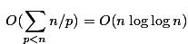
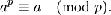
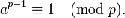

素数判断的几种方法代码实现及其复杂度分析
摘要
素数是证书的基本构件。无穷多素数展现出的某些模式可以说是整个数论甚至是数学所有领域中最深刻、最优美的。
文章是在大学初期接触 C 语言，学习求素数算法中找到的好文章，为转载，但因为原文地址实在是找不到了，所以不放原文链接。
对于一个整数，怎么判别它是不是素数，这是一个值得深入研究的问题。本文针对几种经典的判断素数方法进行分析，利用计算机模拟实现其算法。并对这些算法进行复杂度分析，在不同数据规模下进行合适的算法实现。
关键字：素数判断 爱拉托逊斯筛选法 费马测试 米勒 拉宾测试
一、朴素判断素数
根据素数的定义，约数只有 1 和它本身的整数称为素数，假设一个整数为 n ，于是最朴素的判断 n 是否为素数的方法就是从 2 到 n-1 都枚举一遍，判断是否存在能整除 n 的整数，如果都不能则 n 为素数。
代码实现如下：
1 | bool Brute_Force(int n) |
此函数返回 true 则说明 n 为素数，反之不是。
很容易发现，这种方法判断素数，对于一个整数 n, 需要 n-2 次判断，时间复杂度为 O(n) 的。在 n 非常大或者测试量很大时，这种方法显然是不可取的。
二、改进朴素判断素数
对于一个小于 n 的整数 x ，如果 n 不能整除 x ，则 n 必然不能整除 n/x 。反之相同。
所以我们按照素数定义来判断素数时，可以进行一个较为明显的优化。即我们只需从 2 枚举到 √𝑛 即可。因为在判断 2 的同时也判断了 n/2 …… 以此类推，到 √𝑛 时就把 2 到 n-1 的数都判断过了。
代码实现如下：
1 | bool Brute_Force2(int n) |
这里使用 i*i<=n 来取代 i<=i<=√𝑛 是为了避免是用 sqrt() 函数，其消耗时间很大，在大量数据测试中时间消耗很明显。
同时强制转换 i 成 _int64 类型是为了防止 i*i 在 int 范围内溢出。
此算法的时间复杂度也很容易得出，对于一个整数 n ，需要测试 √𝑛-1 次，所以本算法的时间复杂度为 O(O(√𝑛) 的。
三、标准的 爱拉托逊斯筛选法
爱拉托逊斯筛选法（以下简称筛法），是一种高效的判断素数的方法。
能够一次性的筛选出某个区间的素数。其算法原理本质还是充分利用了素数的定义，即素数的约数只有 1 和它本身。
如果某个数 m 是另一个数 n 的倍数，则说明 m 肯定不是素数。所以我们只要在某个范围内，将已知素数的所有倍数都筛去，剩下的肯定是素数。因为只有它不是其他数的倍数（ 1 和本身除外）。
具体做法是：先把 N 个自然数按次序排列起来。 1 不是质数，也不是合数，要划去。第二个数 2 是质数留下来，而把 2 后面所有能被 2 整除的数都划去。 2 后面第一 个没划去的数是 3 ，把 3 留下，再 把 3 后面所有能被 3 整除的数都划去。 3 后面第一个没划去的数是 5 ，把 5 留下，再把 5 后面所有能被 5 整除的数都划去。
这样一直做下去，就会把不超过 N 的全部合数都筛掉，留下的就是不超过 N 的全部质数。因为希腊人是把数写在涂腊的板上，每要划去一个数，就在上面记以小点，寻求质数的工作完毕后，这许多小点就像一个筛子，所以就把埃拉托斯特尼的方法叫做 “埃拉托斯特尼筛”，简称 筛法 。（另一种解释是当时的数写在纸草上，每要划去一个数，就把这个数挖去，寻求质数的工作完毕后，这许多小洞就像一个筛子。）
代码实现如下：
1 |
|
在执行完本算法后，isprime[i]=1 则说明 i 是素数。所以本算法在执行完一遍后，就能在 O(1) 的时间复杂度内判断 MAX 以内的任意数是否为素数。所以整个算法的时间消耗都在筛法的效率上。乍看筛法的时间复杂度貌似是 O(n^2) 的，但是其实不然，第二个循环中，每次递增的 i ，当 i 越来越大时， j 很快就能超过 M 。其实筛法的实际复杂度是：

在可以测试的范围内， 其实是接近线形的，虽然实际上不是。 这个是筛法的精妙所在。
四、改进的 爱拉托逊斯筛选法
理论上筛法在可以测试的范围内，已经接近线性的复杂度了，对于一般的需要来说，已经没有什么必要去优化筛法了。但是为了更深入或者满足更苛刻的效率要求，标准的筛法还是有可以改进的地方的，使得筛法在常数级别上得到降低。
实际上在 2007 年， 复旦的 xreborner 已经将筛法改进为真正的线性时间复杂度。 该改进算法是增加了一个数组，记录已经找到的素数，通过这些已经找到的素数，来筛掉后面的数，由于每个数都能分解成质因数的形式，所以所有质因数都被筛掉后，自然不在素数列表中了。
代码实现如下：
1 |
|
这个算法的关键在于 if(i%pr[j] == 0) break; 。它使得任何一个合数，只被它最小的质因数标记过一次。所以整个算法是线性的。但考虑到 log(log(100000000)) 还不到 3 ，故这个线性算法其实也只有理论上的价值罢了。
五、朴素判断+筛法
通过上面的筛法实现可以看出，用筛法直接判断素数是很有限的，筛法受内存的限制，要判断 n 是否为素数，需要开大小为 n 的 bool 数组。当 n 很大的时候，显然是不可取的。所以我们可以折中以上两种算法，将朴素判断和筛法结合在一起，使得朴素判断能得到进一步的优化。
方法二中朴素判断的优化已经大大降低了复杂度。其实我们再深入理解就会发现，其实从 2 到 √𝑛 中，也是有很多判断是没必要的，比如某个数 n 不能被 2 整除，则必然不能被 4 整除（其实 2 的倍数都不能）。所以用筛法预处理出小于 √𝑛 的所有素数 。这样在大量数据测试的时候效率提高很多。
代码实现如下：
1 | void prime(int n) { |
由以上 5 种方法可以看出，并不是朴素算法就一定没优点，也不是高效的筛法就很完美，有时候经过深入了解，将各种已经存在的算法组合在一起也能发挥很大的效果，从而达到优化原先算法的程度。
上面的算法总时间复杂度理论上也是 (O(√𝑛) 的，但是常数上已经得到很大的优化，效率上比原来改进的朴素快了好几十倍之多。数据范围越大，其优化效果也明显。
六、费马素性测试
费马小定理说的是：如果 p 是一个素数，那么对于任意一个整数 a ，a p − a 能被 p 整除，也可以用模运算表示如下：

这个定理又如下变式：如果 p 是一 个素数，且整数 a 与 p 互素，那么 a p −1 −1 可以被 p 整除，用模运算表示如下：

还有一种表述是：如果 p 是一个素数， a 是一个整数且 a 不包含因数 p ，那么 a p −1 -1 可以被 p 整除。
费马小定理是费马素性测试的基础。
费马在给出此定理的时候未给出证明，第一个证明其的人是 Gottfried Leibniz 。费马素性测试是判断一个数是否为素数的一个基于概率的测试。事实上，费马小定理的逆否定理成立，而费马小定理的逆定理是不成立的，而费马素性测试就是基于费马小定理的 “逆定理” 的。
大概的算法描述是，当 p 为奇数时（偶数特判一下就行啦，不就一个 2 嘛）让 a 在 1-p 之间 包括 1 和 p ）选取随机值，如果等式不成立，那么 p 肯定不是素数，如果成立，那么 p 就有较大可能是素数，我们称他为伪素数。当然，费马素性测试是有极大缺陷的，因而基本上平时没有多大用武之地。一个缺陷就是 Carmichael 数的存在， Carmichael 数是指如果一个数 n 可以通过所有 ‘ 值的费马素性测试却并非为素数，那么就叫 n 为 Carmichael 数。这样的数随着 n 的增大而越来越少的，这些数中，最小的一个是 561.
费马测试的具体实现是，对于 N ，从素数表中取出任意的素数对其进行费马测试，如果取了很多个素数， N 仍未测试失败，那么则认为 N 是素数。当然，测试次数越多越准确，但一般来讲 50 次就足够了。另外，预先用 小学生 的算法构造一个包括 500 个素数的数组，先对 Q 进行整除测试，将会大大提高通过率 。
代码实现如下：
1 | int Montgomery(int n,int p,int m) |
七、米勒 拉宾素性测试
拉宾米勒测试是一个不确定的算法，只能从概率意义上判定一个数可能是素数，但并不能确保。 但是也是目前公认最高效的素性测试之一。
算法流程如下：
- 选择 T 个随机数 A ，并且有
A<N成立。 - 找到 R 和 M ，使得
N=2*R*M+1成立。
快速得到 R 和 M 的方式： N 用二进制数 B 来表示，令C=B-1。
因为 N 为奇数（素数都是奇数），所以 C 的最低位为 0 ，从 C 的最低位的 0 开始向高位统计，一直到遇到第一个 1 。
这时 0 的个数即为 R M 为 B 右移 R 位的值。 - 如果
A^M%N=1，则通过 A 对于 N 的测试，然后进行下一个 A 的测试。 - 如果
A^M%N!=1，那么令 i 由 0 迭代至 R ，进行下面的测试。 - 如果
A^((2^i)*M)%N=N-1则通过 A 对于 N 的测试，否则进行下一个 i 的测试。 - 如果
i=r，且尚未通过测试，则此 A 对于 N 的测试失败，说明 N 为合数。 - 进行下一个 A 对 N 的测试，直到测试完指定个数的 A 。
通过验证得知，当 T 为素数，并且 A 是平均分布的随机数，那么测试有效率为 1/(4^T) 。如果 T > 8 那么测试失误的机率就会小于 10^(-5)，这对于一般的应用是足够了。如果需要求的素数极大，或着要求更高的保障度，可以适当调高 T 的值。
代码实现如下：
1 | long long Pow_mod(long long bs,long long power,long long diver) |
由于能用逐次平方法在 O(logn) 的时间内算出 a^b mod c. 米勒拉宾的算法时间主要是花在这里了，所有米勒 拉宾算法的时间复杂度是 O(logn) 的。对于朴素判断优化的 O(√𝑛 ) 要快了好多。
八、总结与期望
通过以上 7 种判断素数方法的深入了解和代码实现，可以发现素数确实是数论中相当重要的一个组成元件。其涉及的方面相当广泛。
通过以上几种方法的分析，我们能更清晰更具体的看到素数判断在不同的需求下，会有不同的算法选择。高效的筛法却不能逃避内存的限制，而米勒 拉宾测试是一种不确定的算法，有不确定性，这些都是高效算法所需要付出的代价。
深入了解这些算法思想，能让我们在面 对更多更难的问题时，能够冷静思考，从其定义和性质来分析，进一步分解问题，从而达到高效的解决。
参考文献
[1] Joseph H.Silverman, A Friendly Introduction to Number Theory(Third Edition),China Machine Press
[2] 刘汝佳，《算法艺术与信息学竞赛》
[3] Tho mas H.Cormen Charles E.leis erson Ronald L.Rivest Clifoord S tein Introduction to Algorithms(Second Edition), China Machine Press